주요연혁
우리의 누룩(麴)으로 좋은 술(醇)을 빚는 집(堂)
2000년대 제 2창업기
한국의 대중주, 대표주
-
2022
- 12월
- 백세주 30 출시
- 11월
- 려, 대한민국 우리술 품평회 증류주 부문 대상 수상
- 07월
- 국순당, 고용노동부 선정 '노사문화 우수기업'
- 04월
- 국순당 칠성막사 출시
- 03월
- 대한민국 주류대상 대상 수상
- 백세주 약주 청주부문
- 1000억 유산균막걸리, 국순당 생막걸리 (탁주-생막걸리 부문)
- 1000억 프리바이오 막걸리 (탁주- 살균막걸리 부문) - 01월
- 백세고 출시
2021
- 12월
- 700만불 수출의 탑 수상
- 11월
- 국순당, '노사파트너십 우수사례 경진대회' 우수상(고용노동부 장관상) 수상
국순당 쌀 바밤바밤 출시 - 10월
- 대한민국 디자인대상 디자인 경영부문 최우수상(국무총리 표창)수상
- 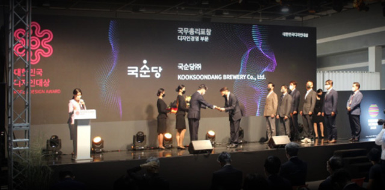
- 06월
- 국순당 쌀 죠리퐁당 출시
- 04월
- 국순당 - 한국수산회 '어식백세 캠페인' 활성화 위한 MOU 체결
- 02월
- 2021 대한민국 주류대상 대상 수상
- 1000억 유산균 막걸리, 1000억 프리바이오 막걸리(탁주부문), 려(소주부문)
2020
- 12월
- 500만불 수출의 탑 수상
- 08월
- 1000억 프리바이오막걸리 캔 출시
- 07월
- 국순당 생막걸리, 리뉴얼 출시
- 06월
- 백세주, 리뉴얼 출시
- 02월
- 2020 대한민국 주류대상 대상 수상
- 1000억 유산균 막걸리, 국순당 쌀막걸리(탁주부문),려(소주부문) - 01월
- 1000억 프리바이오 막걸리 출시
전통주 베스트 트로피 각 부문 1위
- 1000억 유산균 막걸리(탁주부문), 예담(약/청주부문), 명작복분자(과실주 부문)
전통주 베스트 트로피 각 부문 2위
- 려(증류주 부문), 자연담은복분자막걸리(탁주부문)
2019
- 11월
- 국순당 고용노동부 주최 일 생활 균형 우수기업 사례 공모전 대상 수상
려, 대한민국 우리술 품평회 최우수상 수상 - 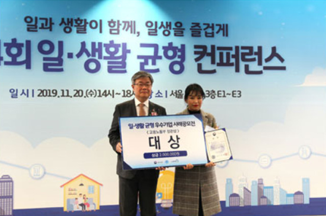
- 09월
- 국순당, 소비자가 선정한 농업-기업 간 농식품 상생협력 우수기업'선정
- 06월
- 1000억 유산균 막걸리, 쌀 가공품 품평회 TOP10 중 1위 선정, 농림축산식품부 장관상 수상
- 05월
- 국순당 횡성양조장, 농림축산식품부 지정 '찾아가는 양조장' 선정
- 02월
- 2019 대한민국 주류대상 대상 수상
- 백세주 (약주부문), 1000억 유산균 막걸리, 국순당 쌀막걸리(탁주부문), 려(소주부문) - 01월
- 려, 전통주 베스트 트로피 전체 1위
2018
- 09월
- 고용노동부 주최 일학습병행 우수사례 경진대회 기업부문 최우수상 수상
제 21차 남북이산가족 상봉행사 만찬주 제공 - 08월
- 백세주, 뉴욕 국제 와인 품평회 금상 수상
- 06월
- 환경부 지정 녹색기업 4회 연속 선정
- 05월
- 1000억 유산균 막걸리 출시
- 04월
- 세계 컨시어지 총회 만찬주 제공
- 02월
- 2018 대한민국 주류대상 대상 수상 - 백세주, 수리(약주부문), 아이싱(탁주부문)
- 01월
- 옛날 막걸리, 전통주 베스트 트로피 탁주 부문 1위
2017
- 11월
- 야관문주 수리 출시
- 10월
- 횡성 한우축제 공식 후원사 선정
- 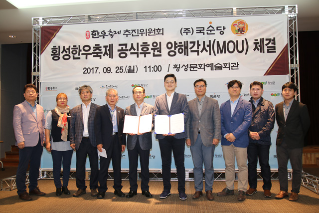
- 08월
- 짠 출시
막걸리카노 출시 - 07월
- 국순당 식초 5종 출시
- 05월
- 세계 체육기자연맹 총회 공식 만찬주 제공 - 백세주, 국순당 쌀 막걸리
- 04월
- 국순당-강원대학교 지역 양조사업 발전을 위한 산학협력 MOU 체결
- 02월
- 2017 대한민국 주류대상 대상 수상 - 백세주(약주부문),려 (소주부문)
2016
- 12월
- 아이싱 자몽 크리스마스 에디션 출시
국순당 횡성양조장 전 제품 HACCP 인증 획득 - 10월
- 국순당 쌀 크림치즈 출시
- 08월
- 증류소주 려 출시
콤주, 본초 선물세트 2016 레드닷 디자인 어워드 커뮤니케이션 부문 수상 - 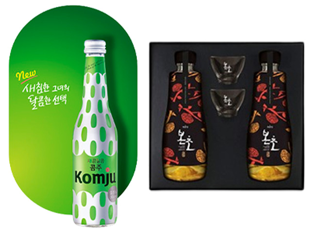
- 07월
- 국순당 쌀 복숭아 출시
아이싱 시즌스페셜 출시 - 05월
- 국순당 쌀막걸리 과일시리즈, 2016 상하이 식품박람회 혁신제품 선정
아이싱 청포도, 캔디소다 출시 - 04월
- 국순당 쌀 바나나 출시
백세주, 주류 최초 정부 선정 우수문화상품' 으로 지정 - 03월
- 해외 주류품평회 한국 술(K-SOOL) 카테고리 신설
백세주, 스위스 세계경제포럼(다보스포럼) 만찬주 제공 - 02월
- 백세주, 2016 대한민국 주류대상 우리술 약주부문 대상 수상
2015
- 12월
- 대박 새해 한정판 제품 출시
아이싱 홀리데이 에디션 출시 - 11월
- 국순당 - 국립자연휴양림관리소 상호협력 약정(MOU) 체결
- 10월
- 제 20차 남북 이산가족 상봉행사 만찬주 제공
- 09월
- 제 1회 상생협력 경연대회 대상(농림축산식품부장관상) 수상
본초 선물세트 출시 - 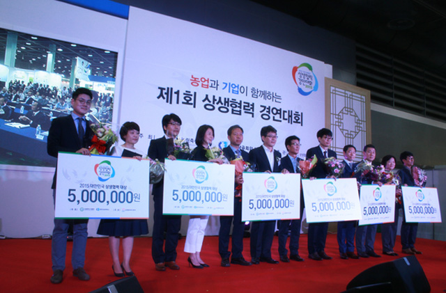
- 07월
- 횡성공장, 녹색기업 3회 연속지정
- 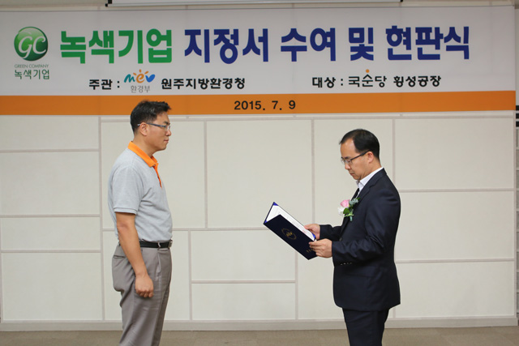
- 06월
- 백세주 리뉴얼 출시
- 03월
- 아이싱, 2015 국제 동부 와인품평회 'Best of show' 선정
- 01월
- 백세주 클래식 출시
2014
- 08월
- 국순당 횡성공장 HACCP 지정 (약주·과실주)
- 06월
- 대박, 아이싱 2014 브라질 식품박람회 혁신제품 (SIAL INNAVATION) 선정
- 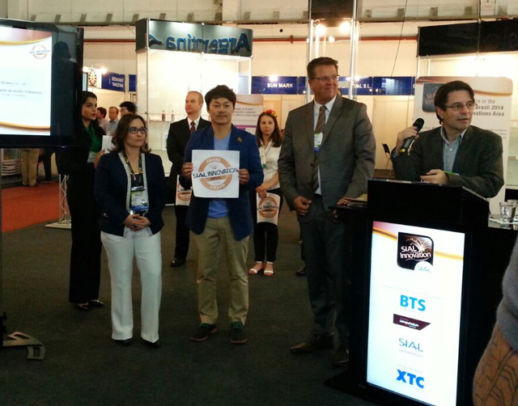
- 05월
- 우리술 복원 사업 스물 세번째, 네번째 - 불술, 옥수수술 복원
- 03월
- 셀프형 안주 뷔페 주점 Mr.B 오픈
백세주마을 프랑스 파리점 오픈 - 02월
- 제19차 남북이산가족 상봉행사 만찬주 제공
2014 대한민국 주류대상
약주부문 백세주, 탁주부문 대박 수상 - 01월
- 국순당 횡성공장 탁주 HACCP 지정(탁주)
2013
- 12월
- 주(Komjoo) 출시
백세주, 제 19회 KOSA 유통대상 전통주부문 본상 수상 - 11월
- 전통주 최초 셀프형 전문주점 오픈 (백세주마을 부산 남포점)
- 10월
- 아이싱, 쌀가공품 품평회 TOP 10 선정 06월 아이싱, 벨기에 슈페리어 테이스트 어워드 2013 별 2개 평가
- 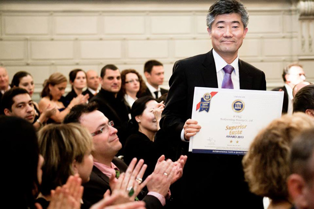
- 04월
- 대박 막걸리 출시
- 03월
- 우리 술 복원 사업 스물 두번째 - 삼합주 복원
샌디에이고 국제 와인대회 프룻와인 부문 명작청매실 금상 스파클링 프룻와인 부문 아이싱 은상 수상
아이싱, 캘리포니아 컨슈머 와인어워즈 은상 수상 - 02월
- 국순당 막걸리, 업계 최초 외국 항공사 프리미엄 라운지 입점
2013 달라스 모닝뉴스 & 텍사스 소믈리에 와인대회 프룻와인 부문 명작청매실 은상
라이스와인 부문 국순당 쌀막걸리, 아이싱 동상 수상 - 01월
- 우리 술 복원 사업 스물 한번째 - 유하주 복원
2012
- 12월
- 백세주, 제 18회 KOSA 유통대상 전통주부문 본상 수상
- 11월
- 예담, 조선일보 광고대상 최우수상 수상 (식음료 · 의약부문)
우리 술 복원 사업 스무번째 - 신선고본주 복원
예담, 한겨레 광고대상 대상 수상 (식음료 · 제약 부문) - 09월
- 백세주2 출시
자연담은 인삼 막걸리 출시 - 08월
- 고리마루 오픈 (일본 도쿄점)
아이싱 출시 - 06월
- 국순당 생막걸리, SIAL 국제식품 박람회 SIAL INNOVATION 혁신제품 선정
명작청매실 출시 - 05월
- 우리 술 복원 사업 열 아홉번째 - 사시통음주 복원
옛날막걸리 출시 - 04월
- 국순당 생막걸리, 2012 달라스 모닝뉴스& 텍사스 소믈리에 와인대회
라이스와인부문 동상 수상
국순당 생막걸리, 자연담은 복분자 막걸리 2012 아시아주류품평회 은상 수상 - 03월
- 예담 300ml 출시
2011
- 12월
- 백세주, 제 17회 KOSA 유통대상 전통주부문 본상 수상
- 11월
- 법고창신, 방청옥결 세트 제 20회 대한민국 패키지디자인 대전
주류부문 팩스타상 수상 2011 햅쌀로 빚은 첫술, 세계한상대회 건배주 선정
우리 술 복원 사업 열 여덟번째 - 청감주 복원 - 10월
- 자연담은 오미자, 2011 대한민국 우리술 품평회 살균막걸리부문 최우수상 수상
명작 오미자, 디자인코리아 2011 건배주 선정 - 09월
- 우리 술 복원 사업 열 일곱번째 - 송화천로주 복원
- 07월
- 우리 술 복원 사업 열 여섯번째 - 한산춘 복원
- 06월
- 국순당 생막걸리, 2011 뉴욕 국제 주류대회 라이스와인부문 은상 수상
2011 샌프란시스코 국제와인대회 라벨디자인부문 명작 대상, 예담 은상 수상
테이스트부문 미몽 은상, 국순당 쌀막걸리 동상 수상
백세주, 명작 복분자 세계한인회장대회 건배주 선정
우리 술 복원 사업 열 다섯번째 - 석탄향 복원
국순당 - 국립농업과학원 우리술 품질 향상 및 대중화 촉진 기술교류 협약 체결 - 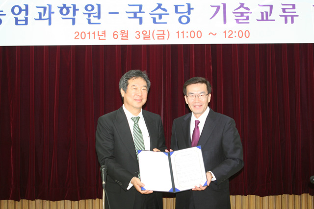
- 05월
- 우국생, 국제소믈리에 대회 최고의 막걸리 선정
- 04월
- 우리 술 복원 사업 열 세번째 - 백하주 복원
우국생, 국순당 쌀막걸리 우리술 품질인증심사 1호 · 2호 획득
국순당 - 국립식량과학원 설갱미 공동연구 연장 협약 - 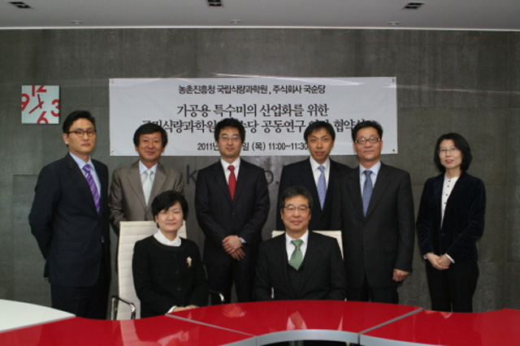
- 03월
- 우리 햅쌀로 빚은 국순당 쌀막걸리 (350ml CAN용기) 출시
우리 술 복원 사업 열 세번째 - 부의주 복원
자연담은 오미자 막걸리, 자연담은 더덕 막걸리 출시 - 01월
- 오름 출시
2010
- 11월
- 백세주, 우국생 열량 및 영양성분 표기 라벨 부착
- 10월
- 국순당 - 문화유산신탁 문화유산 보존기금 기부 협약 체결
2010 대한민국 우리술 품평회 살균막걸리부문 미몽, 과실주부문 명작 복분자 최우수상 수상
2010 햅쌀로 빚은 첫술 막걸리 출시 - 08월
- 자연담은 복분자막걸리 출시
우국생, IUFOST 2010 'Global Food Industry Awards' 수상
국순당, 국순당 L&B 양사 합병 - 07월
- 국순당 생막걸리, '2010 샌프란시스코 국제 와인대회'
스파클링 와인부문 동메달 수상
자양백세주, Rice Base 부문 은메달 수상
환경부 지정 '녹색기업 선정 - 06월
- SAN FRANCISCO INTERNATIONAL WINE COMPETITION(2010)
국순당' THE BEST OF NATION 수상 '자양백세주' 은상수상
국순당 생막걸리', '백세주', 강장백세주', '명작복분자' 동상수상 - 05월
- 우리술 복원 사업 열 두번째 - 진맥소주 복원
우리쌀로 빚은 국순당 생막걸리, 2010 유네스코 세계문화예술교육대회
공식건배주 선정 - 04월
- 우리쌀로 빚은 국순당 생막걸리 출시
국순당 - 경상북도 상호협력 약정(MOU)체결
이화주 400ml 출시 - 02월
- 신도주 출시
- 01월
- 국순당 생막걸리, CICI KOREA 2010 공식건배주 선정
국순당 생막걸리, 출시 100일만에 100만병 판매돌파
미몽, 다보스포럼 한국의 밤 공식건배주 선정
2009
- 12월
- 우리술 복원 사업 열한번째 - 쌀 머루주 복원
우리술 전문주점 “우리술상 대치 1호점 오픈
미몽, 2009 디자인 코리아 공식건배주 선정 - 11월
- 맑은 백세 막걸리 출시
- 10월
- 우리술 복원 사업 열번째 상심주 복원
자양백세주, 2009 대전 국제 우주대회 공식건배주
미몽, 2009 세계디자인 학술대회 공식건배주 - 09월
- 국순당 생막걸리, 2009 그린코리아 공식건배주
국순당 생막걸리, 제9회 EATOF 동아시아 연합 강원도 총회 공식건배주 - 08월
- 강장백세주, 2009 세계환경포럼 공식건배주
국순당 생막걸리, 공학 교육연구 국제학술회의 (ICEE ICEER 2009 KOREA) 공식건배주
우리술 복원 사업 아홉번째 - 미림주 복원 - 06월
- 자양백세주 출시
- 05월
- 우리술 복원 사업 여덟번째 - 약산춘 복원
- 04월
- 국순당 생막걸리 출시
우리술 복원 사업 일곱번째 - 동정춘 복원
우리술 복원 사업 여섯번째 - 소곡주 복원 - 03월
- 문화재청과 1문화재 1지킴이 협약 체결
(조선왕조 궁중음식 궁중병과 후원,면천두견주 후원) - 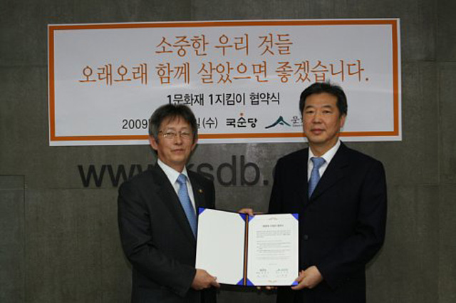
- 02월
- 우리술 복원 사업 다섯번째 송절주 복원
2008
- 12월
- 배로 막걸리, 배로 증류주, 배로 과실주 출시
- 10월
- 우리술 복원 사업 네번째 - 신도주 복원
- 08월
- 우리술 복원 사업 세번째 - 이화주 복원
우리술 복원 사업 두번째~ 자주 복원 - 06월
- 강장 백세주, 2008 OECD 장관회의 공식 건배주 선정
- 05월
- 우리술 복원 사업 첫번째 - 창포주 복원
- 01월
- 50세주 출시
2007
- 11월
- '백세주 담' 출시
- 10월
- 2007 디지털 지식 경영대상 정보통신부장관상 수상
'국순당 쌀막걸리' PET제품 출시 - 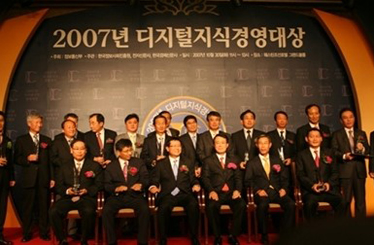
- 09월
- 백세주 대한민국 명품주 선정 (국세청) 107월 환경부 지정 환경친화기업 선정
명작 오미자, 명작 오가자, 명작 복분자, 명작 상황버섯 개발 및 출시 - 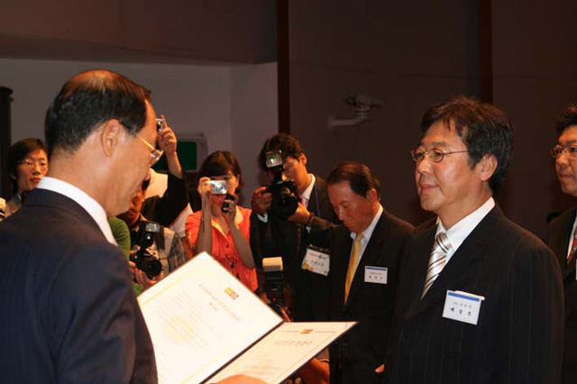
- 05월
- 백세주 상하이 국제식품박람회 주류 콘테스트 은상 수상 '공병보증금제도 실시
(강장백세주, 백세주) 상하이 SIAL 국제식품박람회 주류 콘테스트 은상 '미동' 출시 - 02월
- 강장 백세주, 백세주 모스크바 프로드 엑스포 주류콘테스트 금,은상 수상
- 01월
- 생백세주13 개발 및 출시
2006
- 08월
- 신제품 '오미명작', '오가명작' 출시
- 07월
- 북한 금강산 '백세주 마을 금강산점' 오픈
- 06월
- 2006 기업지배구조 우수기업 선정 (한국기업구조개선지원센터)
- 04월
- 중국 유통법인 '북경백세상무유한공사' 설립
- 02월
- 신제품 별 출시
2005
- 11월
- 신제품 '아오라(AORA) 출시
- 10월
- 2005 소비자웰빙지수(KWCI) 1위 (연세대, 한국표준협회컨설팅)
- 08월
- 신제품 국순당 차례주' 출시
- 05월
- 리뉴얼 '백세주' 출시
- 04월
- 북경 백세주가(百歲酒家) 오픈
- 01월
- 국순당 미션헌장 선포
2004
- 11월
- 백세주 항암, 위 보호 성분 함유 기자 회견
- 06월
- 횡성공장 준공
존경 받는 기업 1위 선정 (주류부문, 한국능률협회컨설팅)
2003
- 12월
- 배중호 대표이사, 올해의 BEST CEO 선정 (한경 비즈니스)
한국수퍼마켓협동조합연합회 KOSA 유통대상 - 11월
- '삼겹살에 메밀한잔' 출시
- 09월
- 신노사문화 우수기업 선정 (수원지방노동부)
- 08월
- 자본금 증가 (무상증자)
- 05월
- 백세주 상하이 국제식품박람회 주류 콘테스트 은상 수상
- 03월
- 해태&컴퍼니 인수
2002
- 10월
- PLMS 구축 시스템 기반 구축
- 09월
- 전통주 발전 및 복원 주관('아름다운 우리술을 찾습니다',
실종 위기의 전통주 제조법을 발굴) - 07월
- 국순당 CI 변경 - 사람을 생각하는 기업이미지 강화
- 06월
- 청정공장 선정 (미8군 위생검열 수검 및 합격)
- 03월
- 철탑 산업훈장 - 대표이사 배중호
- 02월
- 도매점 관리 전산 시스템 구축
- 01월
- 백세주 마을 OPEN (강남점)
2001
- 11월
- 한국전통식품 BEST5대상(대통령상) 수상 (농림부)
- 10월
- 일본지사 업무 개시 (백세주 JAPAN)
- 08월
- 특허출원 고품질 술의 제조방법 (10-2001-0047822)
- 03월
- '백세주막' OPEN (인터넷 커뮤니티 freechal)
2000
- 08월
- 코스닥시장 등록 (거래개시 08.24)
국순당 비전 선포식
한국전통식품품평회 은상 수상 (전통주 부문) - 06월
- 강남 삼성동 사옥 이전
- 03월
- 벤처기업인증 재 획득 (벤처우수기업평가)
우수기업부설연구소 표창 (과기부장관상 / 제6961호)
1994년 ~ 1999년 성장기
전통을 오늘에 맞게
-
1999
- 12월
- ISO9002 인증 획득
1998
- 03월
- 주류업계 최초 벤처기업 인증 취득
- 01월
- 퇴계원 막걸리공장 수원공장으로 이전
1997
- 05월
- 백세주 375ml 출시
1996
- 10월
- 국순당네 쌀막걸리 (240ml 캔용기) 출시
1995
- 06월
- 기업부설연구소인정 (한국산업기술진흥협회 / 제952168호)
- 03월
- 탁주 '아리랑' 일본 수출 개시
1994
- 12월
- 국산신기술마크(KT마크) 획득 (KT0001호, 과학기술처)
- 07월
- 미국 뉴욕, 시카고 등지에 바이오 수출 개시
- 05월
- 탁주, 약주 50만불 미주지역 수출 계약 체결 (뉴욕 청하 코퍼레이션)
- 04월
- 바이오탁 일본수출 개시(생쌀발효 캔막걸리)
서울사무소 개설 (영업본부) - 03월
- 194국악의 해 공식 전통주 선정
- 02월
- 제1차 전국도매점 모집
- 01월
- 백세주, 흑주 등 전국판매개시 (약주공급구역제한 폐지)
1986년 ~ 1993년 발전기
안전된 기술 확립으로 새로운 사업영역 창출
-
1993
- 07월
- 경기도 남양주 퇴계원공장 (대동양조장) 인수
- 01월
- 바이오탁 시판개시 (생쌀발효 캔막걸리) 강장백세주 출시
1992
- 12월
- (주)국순당 출범 (회사 상호 변경)
배중호 대표이사 취임 - 09월
- 흑주순 출시
1990
- 02월
- 배한 술문화연구장려장학회 설립(한양대학교)
1989
- 07월
- 제1회 약주제조기술 세미나 개최
1988
- 05월
- 탁주양조기술 출간(태양통신 1호 편집,출판)
이조흑주 생산개시 (강원도 강릉)
1987
- 04월
- 제 3회 탁주제조기술 세미나 개최
생쌀발효 동동주 출고 (미국 교포시장)
1986
- 09월
- 수원공장 완공 및 정제효소 생산개시
- 07월
- (주) 배한산업 부설효소연구소 설립 (과기처인가 233호)
- 02월
- 면허취득 나맥 무증자에 의한 주정생산 방법개발 (국세청)
- 01월
- 수원공장 착공
1970년 ~ 1985년 창업기
최신 기술을 통한 효소, 조효소제의 개량
-
1985
- 02월
- 특허출원 보리 또는 밀을 무증자하여 주정을 만드는 방법 개발
1983
- 05월
- 주정용 GU 210 출고 개시
- 02월
- (주) 배한산업 설립
1982
- 00월
- 특허취득 무증자(생쌀발효) 현미주 제조법 (17966)
1980
- 05월
- GURO 210 (보리 주정용 효소) 생산판매
1975
- 00월
- 주정용 조효소제 판매개시, 탁주용 GURO 60 생산판매 개시
- 01월
- 탁약주 기술 전문지 태양통신 창간호 발간
1973
- 01월
- 탁약주 연구소 설립
1970
- 04월
- 한국미생물 공업연구소 설립 (배한산업 전신)
밀기울 곡자 생산시판 개시 (Rhizopus.sp.Asp.Usamii Asp.Oryzae 등 3종균 두 종자 배양)